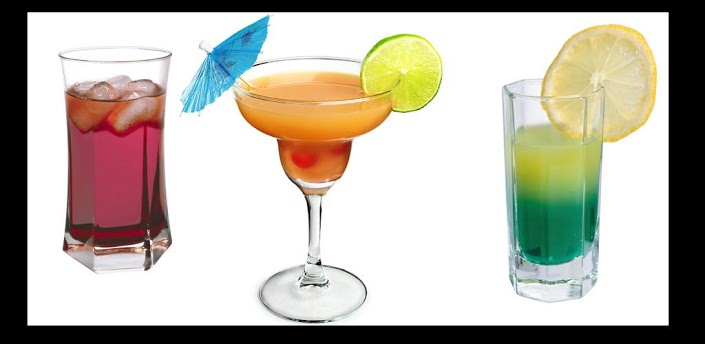

В состав этих напитков входит целое яйцо или только желток. Коктейли с яйцом известны за рубежом под названием "ФЛИП". Вначале они были распространены в Северной Америке, приготавливали их из горячего пива, спирта, взбитых яиц, пряностей и подавали подогретыми.
В настоящее время эти напитки приготавливают без пива и пьют в охлажденном виде. Но есть несколько рецептур коктейлей с яйцом, которые подают в теплом или горячем виде. Содержание алкоголя в напитке колеблется от 3 до 12 процентов. Приготавливают этот напиток в шейкере, при этом стремятся, чтобы яйца хорошо взбились - до образования пены.
Коктейли с яйцом принято подавать с соломинкой в высоких и широких бокалах емкостью от 100 до 200 мл. Подавать коктейли с яйцом следует немедленно после приготовления, т.к. вкус и вид напитка ухудшаются довольно быстро.
1. КОНЬЯК С ПОРТВЕЙНОМ И ЯИЧНЫМ ЖЕЛТКОМ. - Коньяк 60 мл, - портвейн красный 10 мл, - сахарный сироп 10 мл, - яичный желток, - 2-3 кубика льда.
Смешать в шейкере со льдом коньяк, портвейн, сахарный сироп и желток. Охлажденную смесь вылить в высокий конусный бокал.
2. КОНЬЯК С ЯИЧНЫМ ЖЕЛТКОМ. - Коньяк 60 мл, - сахарный сироп 10 мл, - яичный желток, - щепотка черного перца, - 2-3 кубика льда.
Приготовить напиток а шейкере, вылить в бокал и посыпать черным перцем.
3. КОНЬЯК С ЯЙЦОМ. - Коньяк 40 мл, - сахарный сироп 10 мл, - 1 яйцо, - 2-3 кубика льда.
Напиток приготавливают в шейкере со льдом и подают в шарообразном бокале.
4. КОНЬЯК С МАДЕРОЙ И ЯЙЦОМ. - Коньяк 40 мл, - мадера 20 мл, - лимонный сок 10 мл, - один желток, - 2-3 кубика льда.
Все компоненты смешивают в шейкере со льдом и подают в высоком бокале.
5. КОНЬЯК СО ВЗБИТЫМ ЯЙЦОМ. - коньяк 60 мл, - сахарный сироп 10 мл, - апельсиновая настойка 10 мл, - газированная вода 70 мл, - 2-3 кубика льда, - 1 яйцо.
Взбить венчиком яичный белок до пенообразного состояния. Смешать в шейкере со льдом все остальные компоненты, вылить в широкий бокал, положить сверху взбитый белок.
6. МОЛОЧНО-КОФЕЙНЫЙ С ЯЙЦОМ. - коньяк 20 мл, - желток, - молоко или сливки 20 мл, - кофейный настой 40 мл, - сахарный сироп 10 мл, - мелкомолотый кофе, - 2-3 кубика льда.
Все компоненты смешивают в шейкере со льдом, выливают в широкий бокал и посыпают молотым кофе.
7. МАЛАГА С ЯЙЦОМ. - Коньяк 20 мл, - малага 60 мл, - сахарный сироп 10 мл, - тертый мускатный орех, - одно яйцо, - 2-3 кубика льда.
Все компоненты смешивают в шейкере со льдом, выливают в широкий бокал и посыпают молотым кофе.
8. "КРАСНЫЙ МАК". - Коньяк 40 мл, - портвейн красный 20 мл, - апельсиновая настойка 10 мл, - яичный желток, - тертый мускатный орех, - 2-3 кубика льда.
Все компоненты смешивают в шейкере со льдом, выливают в широкий бокал и посыпают молотым кофе.
9. ШОКОЛАД С ЯЙЦОМ. - Коньяк 20 мл, - ром 20 мл, - желток, - шоколадный сироп 20 мл, - взбитые сливки 10 г, - щепотка тертого шоколада.
Все жидкие компоненты, кроме сливок, смешать в шейкере со льдом, вылить в бокал-креманку, положить сверху взбитые сливки и посыпать порошком какао или тертым шоколадом.
10. АПЕЛЬСИНОВЫЙ СОК С ЖЕЛТКОМ. - Коньяк 20 мл, - желток, - апельсиновый сок 40 мл, - сахарный сироп 20 мл, - тертый мускатный орех, - 2-3 кубика льда.
Все компоненты смешивают в шейкере со льдом, выливают в широкий бокал и посыпают молотым кофе.
11. ЛИМОННЫЙ СОК С ЯЙЦОМ. - Лимонный сок 20 мл, - водка 20 мл, - сахарный сироп 20 мл, - одно яйцо, - 2-3 кубика льда.
Все компоненты смешивают со льдом и подают в высоком бокале.
12. "ЗОЛОТОЙ КЛЮЧИК". - Водка 40 мл, - апельсиновый ликер 20 мл, - один желток, - лимонный сок 20 мл, - сахарный сироп 20 мл, - лимонная долька, - лед.
Все компоненты взбивают в шейкере со льдом и подают в высоком бокале, в который кладут дольку лимона.
13. ВОДКА С ЯЙЦОМ. - Водка 20 МЛ, - лимонный сок 20 мл, - малиновый сироп 10 мл, - белок одного яйца, - 2-3 кубика льда.
Напиток приготавливают в шейкере со льдом и подают в широком бокале.
14. ВОДКА С ПОРТВЕЙНОМ И ЯЙЦОМ. - Водка 30 мл, - портвейн красный 20 мл, - сахарный сироп 10 мл, - лимонный сок 20 мл, - белок одного яйца, - 2-3 кубика льда.
Напиток приготавливают в шейкере со льдом и подают в широком бокале.
15. ЯЙЦО В ВОДКЕ. - Водка 20 мл, - сахарный сироп 10 мл, - яйцо.
В конусный бокал опустить яйцо вылить водку и сахарный сироп Напиток пьют одним глотком.
16. РОМ С ЯЙЦОМ. - Ром 30 мл, - облепиховая настойка 30 мл, - сахарный сироп 10 мл, - лимонный сок 20 мл, - белок яйца, - содовая или газированная вода 100 мл, - лед.
Смешать в шейкере со льдом ром, настойку, лимонный сок, сахарный сироп. Вылить охлажденную смесь в широкий бокал, добавить содовую или газированную воду и положить сверху взбитый венчиком белок.
17. ВОДКА С КАКАО И ЯИЧНЫМ БЕЛКОМ. - Водка 20 мл, - шоколадный крем (или ликер) 20 мл, - апельсиновый сок 20 мл, - яичный белок, - 2-3 кубика льда.
Все компоненты хорошо смешать в шейкере со льдом до пенообразного состояния и подать в конусном бокале.
18. "ПЕЛИКАН". - Водка 30 мл, - белый десертный вермут 20 мл, - белок одного яйца, - 2-3 кубика льда.
Взбить белок венчиком до пенообразного состояния. Смешать водку и вермут в шейкере со льдом и вылить в широкий конусный бокал, сверху положить взбитый белок.
19. ЧАЙНО-РОМОВЫЙ С ЯЙЦОМ. - Ром 20 мл, - чайный настой 20 мл, - яичный желток, - взбитые сливки 10 г, - 2-3 кубика льда.
Ром, чайный настой и желток смешать в шейкере со льдом, вылить в высокий конусный бокал и положить сверху взбитые сливки.
20. ЯЙЦО С КРАСНЫМ ВИНОМ И МОРОЖЕНЫМ. - Ром 10 мл, - красное вино 60 мл, - одно яйцо, - сливочное мороженое 50 г, - сахарный сироп 20 мл, - взбитые сливки 10 г, - тертый мускатный орех, - 2-3 кубика льда.
Все компоненты, кроме сливок, взбить в шейкере со льдом, вылить в бокал, положить сверху взбитые сливки и посыпать тертым орехом. Подавать с соломинкой и ложечкой.
21. КОФЕ-ФЛИП. - Кофейный ликер 40 мл, - одно яйцо, - кофейный настой 40 мл, - сахарный сироп 20 мл, - щепотка корицы, - 2-3 кубика льда.
Коктейль приготавливают в шейкере, выливают в бокал и посыпают корицей (ее можно заменить мелкомолотым кофе). Напиток можно подавать со взбитыми сливками (20 г).
22. МУСКАТ С ЯЙЦОМ. - Мускат белый десертный 50 мл, - сахарный сироп 10 мл, - желток одного яйца, - щепотка какао, - 2-3 кубика льда.
Все компоненты взбить в шейкере со льдом, вылить в конусный бокал и посыпать порошком какао.
23. ВЕРМУТ С ЯЙЦОМ. - Вермут красный крепкий 60 мл, - сахарный сироп 10 мл, - лимонный сок 10 мл, - водка 10 мл., - тертый мускатный орех, - яичный желток, - 2-3 кубика льда.
Смешанный в шейкере напиток вылить в бокал и посыпать тертым мускатным орехом.
24. ШАМПАНСКОЕ С ЯЙЦОМ. (1-й вариант) - Сухое белое вино 40 мл, - коньяк 10 мл, - яйцо, - сахарный сироп 10 мл, - шампанское 100 мл, - тертый мускатный орех, - 2-3 кубика льда.
Смешать в шейкере со льдом вино, коньяк, яйцо и сахарный сироп до образования пены. Приготовленную смесь вылить в высокий конусный бокал, добавить шампанское и посыпать тертым мускатным орехом.
25. ШАМПАНСКОЕ С ЯЙЦОМ. (2 и вариант) - Ликер апельсиновый 20 мл, - яичный желток, - апельсиновый сироп 20 мл, - шампанское 100 мл, - 2-3 кубика льда.
Приготавливают напиток обычным способом.
26. КРАСНОЕ ВИНО С ЯЙЦОМ. - Красное вино 50 мл, - коньяк 10 мл, - яйцо, - сахарный сироп 10 мл, - яичный желток, - тертый мускатный орех, - 2-3 кубика льда.
Все компоненты смешать в шейкере со льдом, вылить в широкий бокал и посыпать тертым мускатным орехом. Напиток можно подавать подогретым, в этом случае соломинка заменяется ложечкой.
27. ПОРТВЕЙН С КОНЬЯКОМ И ЖЕЛТКОМ. - Портвейн красный 60 мл, - коньяк 20 мл, - сахарный сироп 10 мл, - яичный желток, - тертый мускатный орех, - 2-3 кубика льда.
Напиток приготавливают в шейкере, выливают в бокал и посыпают тертым мускатным орехом.
28. "ПЧЕЛКА". - Ром 40 мл, - желток, - мед 10 г, - молоко 80 мл, - взбитые сливки 10 г, - 2-3 кубика льда.
В бокал со смешанным напитком кладут взбитые сливки.
29. "ПУЛЬСАР" - джин 25 см.куб., - 1 яйцо, - 1 чайная ложка кетчупа, - 1/4 чайной ложки хрена, - соль, - перец, - зелень петрушки
Желток яйца отделить от белка. Все компоненты (кроме желтка) взбить в шейкере или эл.миксере. Содержимое шейкера вылить в коктейльную рюмку. Сверху в коктейль осторожно, с помощью столовой ложки, добавляют нерастекшийся желток. Сбрызгивают желток уксусом и украшают листиками петрушки. Коктейль подают без льда. Пьют одним глотком.